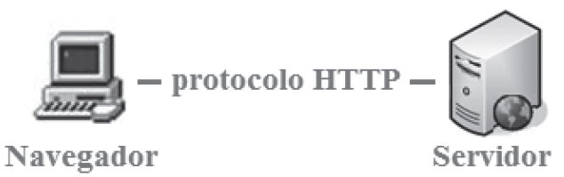

Una página web, tienen como principal objetivo, transmitir información a través de un documento electrónico. El primer paso para que los datos sean ofrecidos al usuario, es que este previamente haya realizado una solicitud. En el momento en el que el usuario realiza la petición y el servidor ofrece la respuesta, la comunicación vía HTTP finaliza. La navegación entre páginas a través de hiperenlaces, establece comunicaciones que comienzan y finalizan con la petición y respuesta del servidor. Esta es la interacción que el cliente tiene con una página web estática. Como hemos ido viendo en las unidades anteriores, este tipo de páginas, que son habitualmente utilizadas para mostrar
información, han quedado relegadas a un segundo plano. Las necesidades en la Red han impulsado tecnologías que ayudan complementar las carencias del protocolo HTTP, para dar dinamismo a la navegación. Estas tecnologías se ejecutan a nivel de navegador y a nivel de servidor, y aunque ambas pueden realizar la misma funcionalidad, combinarlas es lo que convierte una página web en potente, rápida, segura, dinámica e interactiva.
Una página web dinámica interactiva es la que permite variar el aspecto y comportamiento en función de decisiones que toma el usuario a través de la interfaz gráfica de la página. Para ello se varía la estructura de la página. Para conseguir interactividad en una página web podemos utilizar código de script, que se ejecuta en el navegador. Otra opción es enviar una petición al servidor, de esta forma el código se ejecuta en el servidor y una vez generada la nueva página web vuelve a ser enviada al navegador. Al tratarse de una página web dinámica, en función de los datos introducidos por el usuario, la página se verá modificada mostrando información definida en la programación. Vamos a ver más detenidamente cómo funciona la ejecución de código en el cliente y el servidor, así como cuáles son los ciclos y el orden de prioridad de cada uno. Un navegador web y un servidor se comunican según el esquema mostrado en la imagen que mostramos a continuación:

Según el esquema de la figura anterior, existen dos partes diferenciadas donde se puede interpretar o ejecutar código. En el navegador se ejecuta una parte del código. Otra parte se ejecuta en el servidor. Para que en el ordenador cliente, se ejecute el código, es necesario tener una aplicación, habitualmente se utiliza un navegador web. En el servidor, necesitamos un motor que interprete el código. A continuación vamos a ver cuáles son los tipos de código que se ejecutan en el navegador y en el servidor.
- Código que se ejecuta en el navegador. Cuando el navegador realiza una petición al servidor, este responde. En esa respuesta el servidor envía una página con una extensión. En el caso de no utilizar un lenguaje de servidor, las páginas pueden tener la extensión .html. Si existe un lenguaje de servidor, las páginas tienen otras extensiones, como, .asp, .jsp, .php, etc., dependiendo del lenguaje de servidor que estemos utilizando. Aunque parezca extraño, el que estos lenguajes de programación del servidor cambien, no afecta al resultado
del tipo de código que le llega al navegador. El navegador recibe principalmente 3 tipos de código. Como hemos dicho anteriormente independientes del código que se ejecuta en el servidor. Estos códigos se relacionan entre sí, y se corresponden con el patrón de
arquitectura, modelo-vista-controlador (MVC). El código HTML es la base de las páginas web, este lenguaje describe la estructura y el contenido. La forma en que se interpreta el código por el navegador, es de principio a fin. Primero se interpreta la primera línea y así sucesivamente hasta la última. El navegador interpreta todo el código de una página, cuando este ha terminado de interpretarla hasta el final, se dice que se ha cargado la página completamente. El lenguaje JavaScript se corresponde con el controlador de la arquitectura MVC. Este lenguaje permite configurar la interactividad y el dinamismo de la página web. A través de los eventos de la página, las acciones programadas en este lenguaje, modificaran el aspecto, estructura o visualización de la página. El lenguaje CSS se corresponde con la vista de la arquitectura MVC. Este lenguaje, por tanto, es el encargado de definir la presentación de los datos que se indican en el código HTML. El lenguaje XML es otro lenguaje muy común en el navegador que también se encapsula dentro de los que se ejecutan en el navegador. Este es un lenguaje de marcas extensible que además permite definir la gramática. El navegador es el encargado de interpretar el código y la forma que tiene de hacerlo es similar a HTML. Este lenguaje necesita de CSS para mostrar los datos y en el caso de no utilizar estilos CSS, el navegador muestra la estructura igual que el código original. - Código que se ejecuta en el servidor. Según el servidor existen múltiples lenguajes de programación que se pueden ejecutar. Estos lenguajes permiten definir parámetros en función de perfiles de usuarios, datos a mostrar, consultas a bases de datos, tipo de dispositivo que se usa, etc. Además con estos lenguajes, podemos realizar peticiones al servidor y recibir respuestas, actualizando la página web en función de parámetros enviados. Al contrario que ocurría con los lenguajes del navegador, en el servidor existen infinidad de lenguajes de programación. Estos lenguajes a su vez interactúan con diferentes bases de datos y otras tecnologías relacionadas con el servidor. Habitualmente estos lenguajes son los que condicionan el nombre de la extensión de la página web, algunos de ellos son, CGI, Perl, ASP, PHP, JSP.
Como hemos, existen multitud de lenguajes de programación en el servidor. Cada lenguaje ha ido adoptando unas tecnologías particulares. De esta forma unos lenguajes permiten con más facilidad realizar determinadas operaciones. Algunas de las comprobaciones que se realizan en el servidor son muy generales, y se repiten en las aplicaciones de cada construcción web. Por esta razón casi todos los lenguajes han desarrollados
librerías para realizar las tareas más generales. Además, algunos lenguajes de programación en el servidor han desarrollado su propio framework con el fin de facilitar la operativa en la creación de páginas web. Por ello, es importante conocer el significado de algunos términos relacionados con éstos:
- El termino librería proviene de la traducción del inglés (library). Una biblioteca o librería es un conjunto de subprogramas que sirven para programar una aplicación. Las librerías contienen código y datos que pueden ser llamados desde otro programa principal. De esta forma se evita que cada programa principal desarrolle el código de la librería. En la inclusión del código de librería, éste pasa a formar parte del programa principal.
- La interfaz de programación de aplicaciones (API), es un conjunto de funciones y procedimientos que proveen de bibliotecas (librerías) para ser utilizado por otro programa (generan una capa de abstracción). La diferencia con la librería es que las funciones de una API acceden habitualmente a programas diferentes, permitiendo así generar transparencia al programador.
- Un framework es un conjunto estándar de conceptos y tecnologías con un soporte definido. Habitualmente se emplea para ello una serie de módulos concretos. Estos módulos facilitan la organización y desarrollo del nuevo software. La mayoría de los framework incluyen soporte para programas, bibliotecas y uno o más lenguajes que son interpretados por los programas base del framework para facilitar el desarrollo, agrupar y organizar los componentes del proyecto.